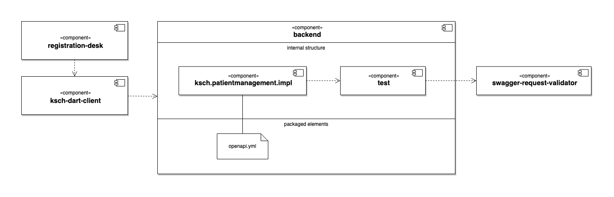

OpenAPI
OpenAPI is a standard for the specification of HTTP APIs. It is designed to be readable both by humans and by machines. So, it is possible to declare OpenAPI Specifications (OAS) in a plain text file that can then be used by computer projects for validation and code generation.
Table of contents
Overview
The backend component offers a REST API for the frontend components like for example registration-desk.
Inside the backend there are for example the sub-components ksch.patientmanagement.impl and test. The ksch.patientmanagement.iml component defines the REST handlers which will process the requests from the API clients.
The test component defines various utilities which can be used for the internal tests of the other components.
It has a dependency on Atlassian's open-source project swagger-request-validator and defines a utility class for its initialisation.
The internal tests of ksch.patientmanagement.impl components leverage the functionality of swagger-request-validator to verify that the test requests and responses match with the API structure defined in the OAS.
The registration-desk uses the Dart library ksch-dart-client for accessing the REST API. Currently, the code of that component is manually created. Later on, the Dart code in the ksch-dart-client component could be generated from the openapi.yml file.
The structures described above are visualised with the following UML Component Diagram:

API design process
The idea of the API design process is to create the "spec first" and afterwards the implementation.
So, if the maintainers of frontend clients need a change in the backend API, they can propose a change in the openapi.yml.
Once there is an agreement on the change to the OSA, the backend maintainer and the frontend client maintainers can work in parallel on the new feature.
Also see
- Using spec-first API development for speed and sanity | atlassian.com
- Episode 542: Brendan Callum on Contract-Driven APIs | se-radio.net
Documentation
The backend's API documentation is generated from the OAS with the free plan of the SaaS service bump.sh.